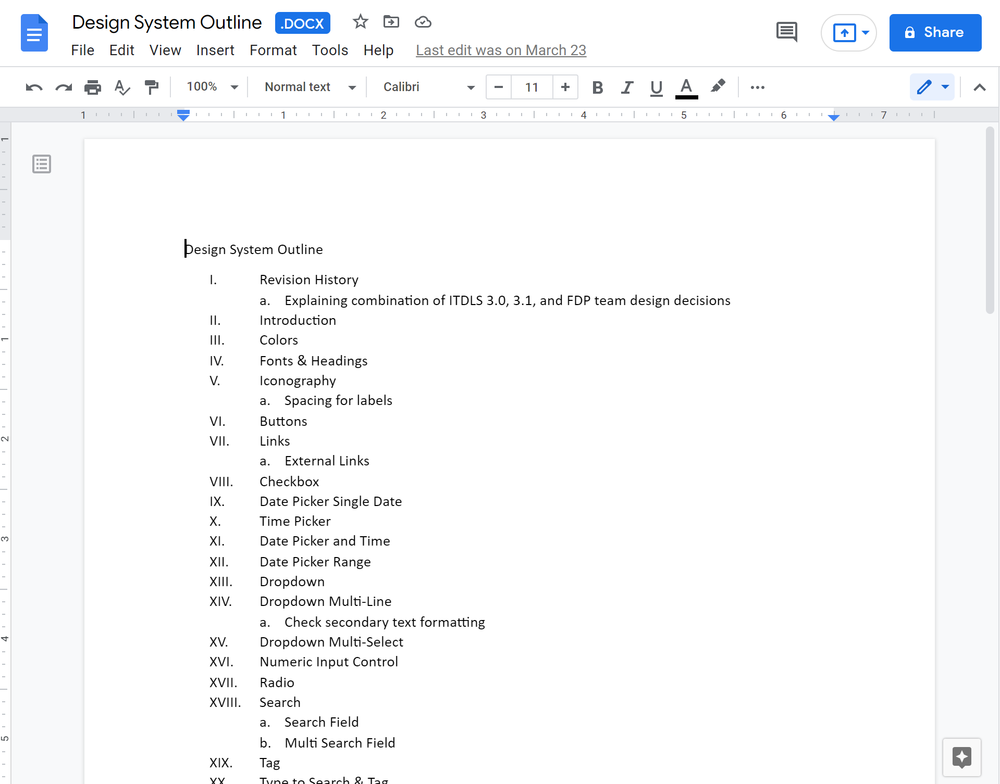

Design Language System
Primary Goal: Aligning, curating and building upon a web application Design Language System
Secondary Goal: Incorporating this documentation and related assets into a project specific UX onboarding process.
Primary Goal: Aligning, curating and building upon a web application Design Language System
Secondary Goal: Incorporating this documentation and related assets into a project specific UX onboarding process.
Team Member: Manuela Rincon
Role: UI Designer
Tools: Adobe XD
Timeline: 3.5 Weeks
When I started on this project, there wasn’t an onboarding process for new UX team members and there was very little documentation about design decisions and patterns.
After working on the data heavy web application with eight agile teams across two time zones, Houston & India, Manuela and I saw the growing importance of having a single source to reference design standards.
The document contains user interface specifications and usage guidelines for an oil and gas company's web-application used to plan projects in the field. It sets consistent standards for all the teams to follow in order to provide a unified user experience across FDP.
As an Adobe XD document, it doubles as a source for the UX team to copy and add components to new prototypes.
As a part of the Houston UX team of two, I worked alongside Manuela on all the following:
Identifying UI Patterns and organizing them into five categories: Overview, Action, Input, Layout & Information
Figure A. Shows the outline Manuela and I crafted after going through the application and identifying all the documented and undocumented patterns.
From the five main categories we sub-categorized each pattern with variations by growing complexity. An example of this being the search field pattern. The basic search, such as the Chrome command F, searching just the content on the page versus an advanced search that searches through a database.
Figure A.
Tag-teaming on a shared XD file, there are three patterns I would like to call attention to from my contribution.
Operational Activities in the oil field can last a few days or span across multiple months. This necessitated a date picker range functionality for selecting the start and end date of an Operation or Operational Activity. Users can enter the data in the input fields or select dates on the calendars.
The Date Picker Range functionality was also implemented within advanced searches.
The tiles within the panel list are selectable items that then change the data being displayed on the right hand side of the screen.
This feature was implemented in one of my team's applications for viewing Field Order data. When users selected a Field Order from the panel list, they could then see the personnel assigned to a project and their role.
The secondary information in the tiles was used to display content allowing users to quickly identify the Field Orders.
Informative messages within modals are used to convey potential errors to a user before they have submitted data. They can also be used to relay messages about actions that should be taken before proceeding.
For example, the data within the modal may have a dependency on Personnel Demand which hasn’t been finalized. In that instance, a warning message would tell the user to review the Personnel Demand and provide a link to that page.
46 UI Patterns in Total
The final product was 60 pages of documentation for the UX team to build upon and use as a tool for quickly adding XD components to new prototypes.
The final step for me was to add the Adobe XD source file and PDF to the UX Onboarding folder, and hand off final documentation to the Product Owner to distribute across all eight agile teams. I then created a video explaining how to use the project's DLS, and defined steps the UX team should take when modifying an existing pattern or establishing a new one.
Three and half weeks was a rushed time-frame to complete this document. We originally intended to work with developers to create coded versions of these components. However with the news that the company was cutting costs and moving our positions, we realized that we needed to narrow our scope. Ideally this document would have already been started before we joined the project, so that it’s just a matter of keeping it up to date.
It’s incredibly beneficial for UX teams to have project specific onboarding and at least one team member should be in charge of maintaining proper documentation of design patterns and decisions.